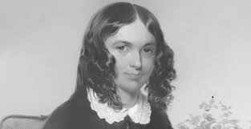

On this day - Feburary 13
Births

1835 - Mizra Ghulam Ahmad
, founder of the Ahmadiyya movement(d.
1908
)
1743 - Joseph Banks
, English botanist and naturalist (d.
1820
)
1884 - Alfred Cartlon Gilbert
, American athelete, inventor and businessman (d.
1961
)
1892 - Grant Wood
, American painter (d.
1942
)
1919 - Tennessee Ernie ford
, American musician (d.
1991
)
1923 - Chuck Yeager
, American Pilot and NASA Official (pictured)
1944 - Stockard Channing
, American actress
Death
1542 - Catherine Howard
, fifth wife of
Henry Vill of England (executed) (b.
1525
)
1660 - King Charles X of Sweden
(b.
1622
)
1662 - Elizabeth of Bohemia
(b.
1596
)
1728 - Cotton Mather
, American Purtian minister (b.
1663
)
1883 - Richard Wagner
, German composer (b.
1813
)
2002 - Waylon Jennings
, American musician (b.
1937
)
More of today's anniversaries...